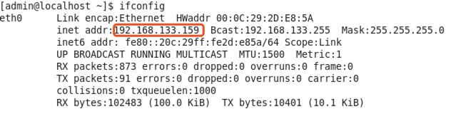
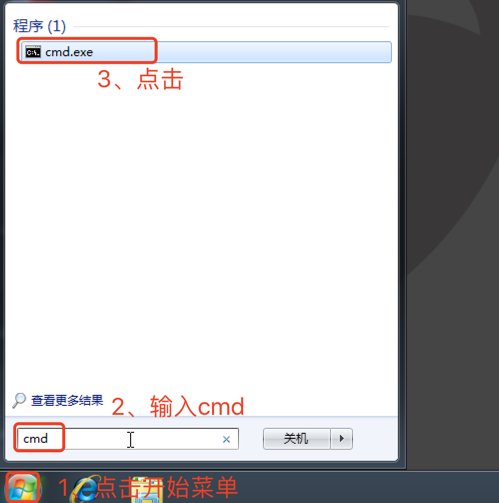
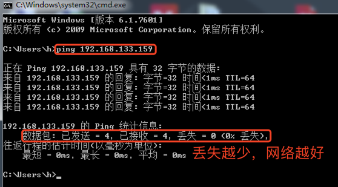
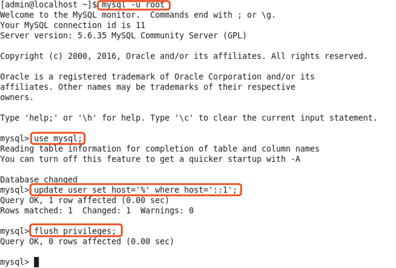
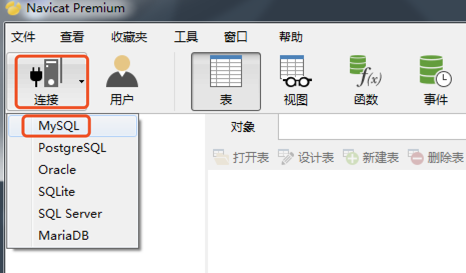
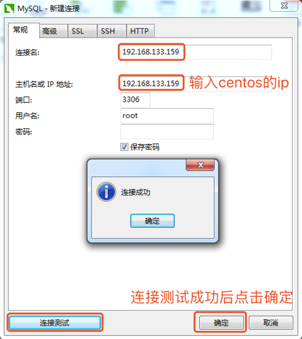
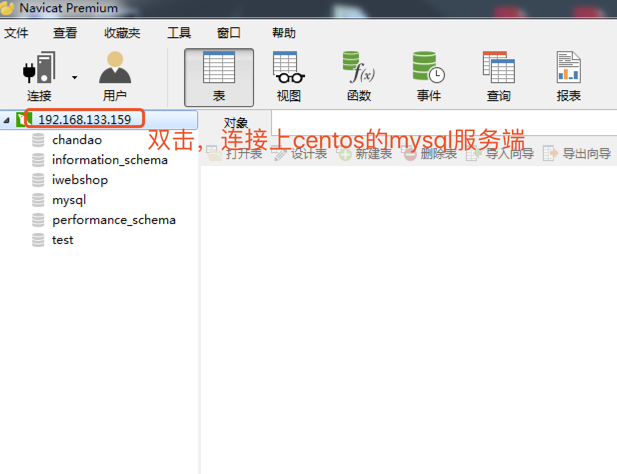
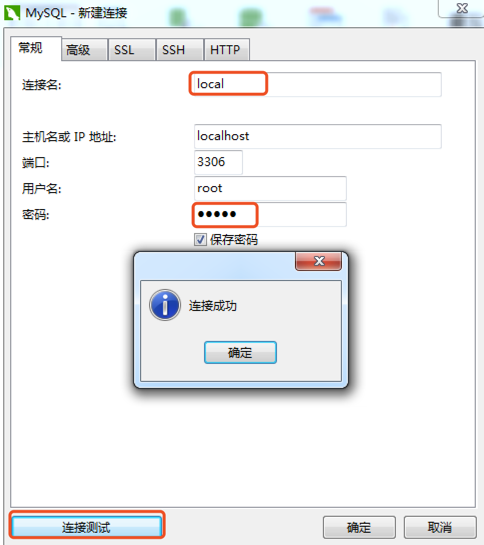
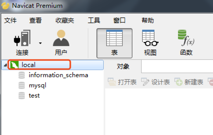

客户端与服务端搭配场景
MySQL在Linux和Windows中都有服务端和客户端，使用时任何平台下的客户端连接到任何平台下的服务端都可以，客户端使用时有两种选择，命令行客户端和界面客户端（navicat），在真实的应用中可以组合出多种场景。
1、远程连接：Windows中的客户端连接Linux中的服务端
1.1、检查Windows与Centos之间的网络是否可以连通
1.1.1、Centos中查看ip，打开Ternimal命令行，输入ifconfig

1.1.2、Windows中测试是否可以连通Centos
打开cmd命令行

输入ping 192.168.133.159（前面查看的Centos的ip）

1.2、在Centos中配置MySQL中的root用户允许远程连接
在Centos中打开Ternimal命令行，依次输入下面命令
mysql -u root
use mysql;
update user set host='%' where host='::1';
flush privileges;

1.3、在Windows中使用navicat连接Centos中的MySQL服务端
1.3.1、打开windows中的navicat程序，点击连接-MySQL

1.3.2、在弹出的窗口，输入连接名、密码，点击连接测试

1.3.3、双击之前的连接名（192.168.133.159），就可以看到Centos的MySQL中所有的仓库

2、本机连接：Windows中的客户端连接Windows中的服务端
2.1、打开navicat程序，点击连接-MySQL
2.2、在弹出的窗口，输入连接名、密码，点击连接测试

2.3、测试成功后，点击确定按钮

2.4、双击之前的连接名（local），就可以看到本机MySQL中所有的仓库
